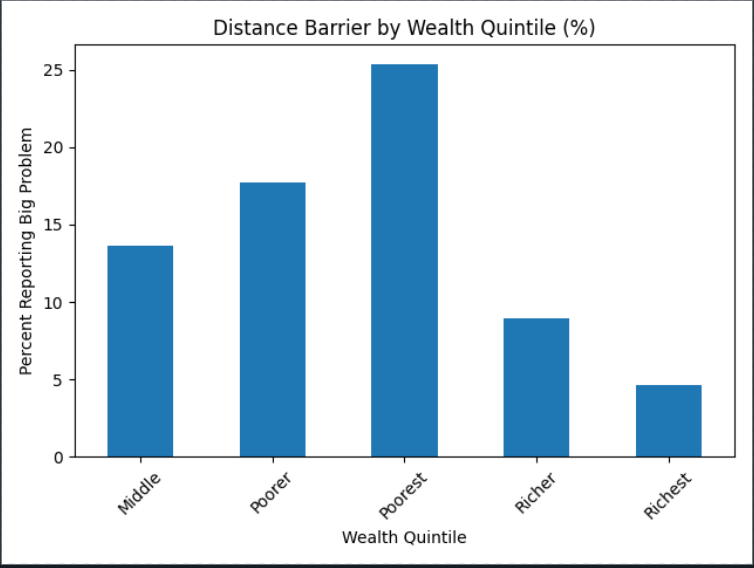

👋 Hello, I'm
Turning data into meaningful insights through analytics, artificial intelligence, and evidence-based research. Passionate about solving healthcare challenges using statistics, machine learning, and data science.
I am a Statistics & Information Technology graduate passionate about Data Science, Artificial Intelligence, and Public Health Analytics. I enjoy transforming data into actionable insights that support evidence-based decision-making and improve lives.
My current work focuses on healthcare inequality analysis in Kenya using Demographic and Health Survey (DHS) data while continuously expanding my skills in machine learning, statistical modelling, and AI.
Learn More About MeProjects
Professional Experience
Certifications
Research Focus

This project investigates disparities in healthcare access and utilization across Kenya using Demographic and Health Survey (DHS) data. The analysis explores the influence of wealth, education, and place of residence on healthcare outcomes through statistical modelling and visualization.
Ongoing
Kenya DHS
EDA • Regression
Healthcare
I am passionate about using data science, statistics, and artificial intelligence to solve real-world challenges. My research interests are centered on creating evidence-based solutions that improve healthcare, inform policy, and support sustainable development.
Leveraging data to improve healthcare access, quality, and decision-making while addressing health inequalities.
Exploring AI and machine learning techniques that support intelligent healthcare systems and predictive analytics.
Transforming raw data into actionable insights through statistical analysis, visualization, and predictive modelling.
Applying statistical methods to uncover trends, test hypotheses, and support evidence-based research.
Investigating health disparities and developing data-driven solutions that improve population health outcomes.
Using analytics to support policy formulation, strategic planning, and sustainable development initiatives.
My technical toolkit combines programming, data analytics, visualization, database management, and web development to create impactful data-driven solutions.
Technology evolves rapidly, and I am committed to continuous learning. I'm currently expanding my knowledge in Artificial Intelligence, Machine Learning, and advanced data analytics to build innovative solutions for real-world challenges.
Building predictive models using supervised and unsupervised learning techniques.
Exploring intelligent systems and practical AI applications in healthcare and research.
Creating interactive dashboards and data stories for decision support.
Learning cloud technologies for scalable data science and AI solutions.
Applying AI and analytics to improve healthcare systems and public health outcomes.
Strengthening skills in statistical modelling, reproducible research, and scientific communication.